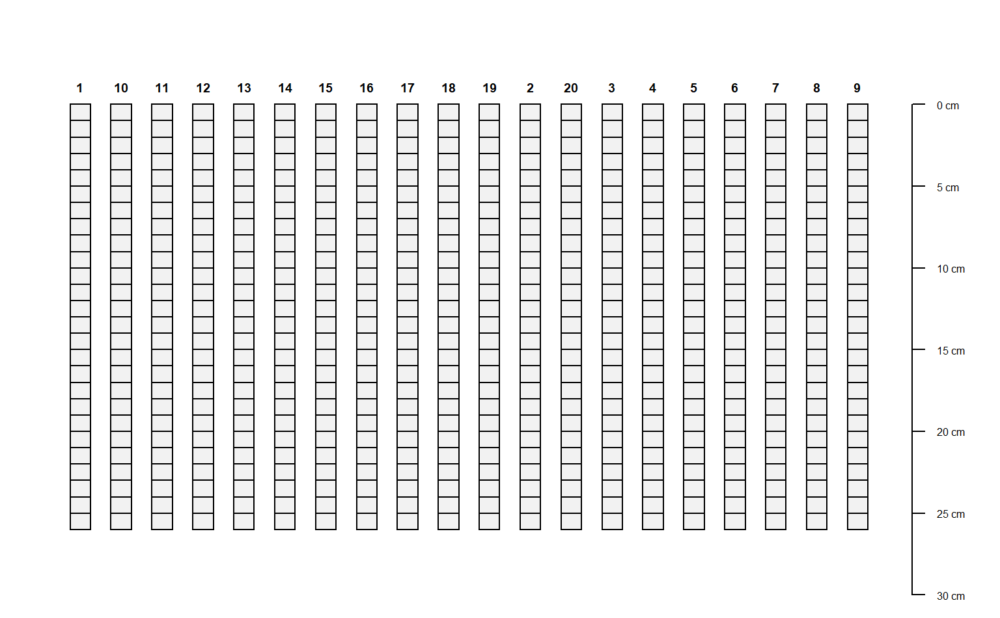

R/SoilProfileCollection-slice-methods.R
slice-methods.RdSlicing of SoilProfileCollection Objects
slice.fast(object, fm, top.down = TRUE, just.the.data = FALSE, strict = TRUE)
| object | a SoilProfileCollection |
|---|---|
| fm | A formula: either |
| top.down | logical, slices are defined from the top-down: |
| just.the.data | Logical, return just the sliced data or a new |
| strict | Logical, should the horizonation be strictly checked for self-consistency? |
Either a new SoilProfileCollection with data sliced according to fm, or a data.frame.
slab() and slice() are much faster and require less
memory if input data are either numeric or character.
By default, slices are defined from the top-down:
0:10 implies 0-11 depth units.
D.E. Beaudette, P. Roudier, A.T. O'Geen, Algorithms for quantitative pedology: A toolkit for soil scientists, Computers & Geosciences, Volume 52, March 2013, Pages 258-268, 10.1016/j.cageo.2012.10.020.
D.E. Beaudette
library(aqp) # simulate some data, IDs are 1:20 d <- lapply(1:20, random_profile) d <- do.call('rbind', d) # init SoilProfileCollection object depths(d) <- id ~ top + bottom head(horizons(d))#> id top bottom name p1 p2 p3 p4 p5 hzID #> 1 1 0 5 H1 2.100996 -13.12545 -1.4499223 14.73655 9.704684 1 #> 2 1 5 20 H2 -3.177135 -26.57304 -15.4318239 22.31482 7.598634 2 #> 3 1 20 29 H3 -14.860366 -15.64381 3.3042816 18.37121 -5.135484 3 #> 4 1 29 49 H4 -19.614619 -27.48689 -3.8042606 24.02491 -1.480708 4 #> 5 10 0 10 H1 7.412569 -11.67323 2.7563337 4.13928 2.836398 5 #> 6 10 10 26 H2 -3.332715 -32.90438 0.5579136 -15.36095 1.011233 6# generate single slice at 10 cm # output is a SoilProfileCollection object s <- slice(d, 10 ~ name + p1 + p2 + p3) # generate single slice at 10 cm, output data.frame s <- slice(d, 10 ~ name + p1 + p2 + p3, just.the.data=TRUE) # generate integer slices from 0 - 26 cm # note that slices are specified by default as "top-down" # e.g. the lower depth will always by top + 1 s <- slice(d, 0:25 ~ name + p1 + p2 + p3) par(mar=c(0,1,0,1)) plot(s)#> SoilProfileCollection with 20 profiles and 220 horizons #> profile ID: id | horizon ID: sliceID #> Depth range: 11 - 11 cm #> #> ----- Horizons (6 / 220 rows | 10 / 12 columns) ----- #> id sliceID top bottom name p1 p2 p3 p4 p5 #> 1 1 0 1 H1 2.100996 -13.12545 -1.449922 14.73655 9.704684 #> 1 2 1 2 H1 2.100996 -13.12545 -1.449922 14.73655 9.704684 #> 1 3 2 3 H1 2.100996 -13.12545 -1.449922 14.73655 9.704684 #> 1 4 3 4 H1 2.100996 -13.12545 -1.449922 14.73655 9.704684 #> 1 5 4 5 H1 2.100996 -13.12545 -1.449922 14.73655 9.704684 #> 1 6 5 6 H2 -3.177135 -26.57304 -15.431824 22.31482 7.598634 #> [... more horizons ...] #> #> ----- Sites (6 / 20 rows | 1 / 1 columns) ----- #> id #> 1 #> 10 #> 11 #> 12 #> 13 #> 14 #> [... more sites ...] #> #> Spatial Data: #> [EMPTY]# note that pct missing is computed for each slice, # if all vars are missing, then NA is returned d$p1[1:10] <- NA s <- slice(d, 10 ~ ., just.the.data=TRUE) print(s)#> id top bottom name p1 p2 p3 p4 #> 1 1 10 11 H2 NA -26.5730401 -15.4318239 22.3148208 #> 2 10 10 11 H2 NA -32.9043796 0.5579136 -15.3609482 #> 3 11 10 11 H1 NA 13.4312901 8.9434846 5.6959738 #> 4 12 10 11 H2 3.1303445 14.3018688 13.8738252 -17.6461848 #> 5 13 10 11 H1 -10.7732131 -5.9517933 -6.7695956 -2.2558461 #> 6 14 10 11 H1 7.6988491 -2.0528115 7.7356950 9.4723767 #> 7 15 10 11 H1 -5.7053875 -2.4528737 -6.7234883 8.6500686 #> 8 16 10 11 H1 6.0021480 -4.9469456 -24.7386769 0.5043324 #> 9 17 10 11 H1 -10.2594042 0.6204660 8.2462092 -0.3943083 #> 10 18 10 11 H1 17.1081030 5.1367586 1.0330448 -1.8981911 #> 11 19 10 11 H1 6.8729434 5.2903982 -7.7648175 -5.8686618 #> 12 2 10 11 H2 7.8935174 -9.0119619 -20.2758117 -10.7755124 #> 13 20 10 11 H1 -9.5093924 5.4518111 7.1748011 0.8772367 #> 14 3 10 11 H1 -1.1782362 4.4720993 -5.5530375 5.4612908 #> 15 4 10 11 H1 -5.2845302 9.0065435 -7.0843331 -4.7107011 #> 16 5 10 11 H1 10.3067833 7.7714537 1.9384619 -6.6499812 #> 17 6 10 11 H1 -0.6011421 -0.4401013 -2.0303461 -11.0944203 #> 18 7 10 11 H1 -3.2740890 7.0050948 9.4140052 -1.1462967 #> 19 8 10 11 H1 -4.1027949 8.7529697 -0.6454372 3.3465849 #> 20 9 10 11 H1 6.1111746 -16.8413789 13.9624546 4.3099537 #> p5 hzID .pctMissing #> 1 7.5986336 2 0.1428571 #> 2 1.0112327 6 0.1428571 #> 3 -0.1085589 10 0.1428571 #> 4 -3.8290374 17 0.0000000 #> 5 -4.8027485 21 0.0000000 #> 6 7.9691753 25 0.0000000 #> 7 8.2572477 31 0.0000000 #> 8 4.7915518 36 0.0000000 #> 9 -8.5813620 40 0.0000000 #> 10 -7.0035910 44 0.0000000 #> 11 -2.2531044 47 0.0000000 #> 12 13.0345417 51 0.0000000 #> 13 -9.4139205 54 0.0000000 #> 14 -6.8468822 60 0.0000000 #> 15 -13.1101548 65 0.0000000 #> 16 -9.2038278 70 0.0000000 #> 17 -16.5744497 74 0.0000000 #> 18 4.7379402 80 0.0000000 #> 19 -4.1472835 86 0.0000000 #> 20 -9.1912859 89 0.0000000if (FALSE) { ## ## check sliced data ## # test that mean of 1 cm slices property is equal to the # hz-thickness weighted mean value of that property data(sp1) depths(sp1) <- id ~ top + bottom # get the first profile sp1.sub <- sp1[which(profile_id(sp1) == 'P009'), ] # compute hz-thickness wt. mean hz.wt.mean <- with( horizons(sp1.sub), sum((bottom - top) * prop) / sum(bottom - top) ) # hopefully the same value, calculated via slice() s <- slice(sp1.sub, 0:max(sp1.sub) ~ prop) hz.slice.mean <- mean(s$prop, na.rm=TRUE) # same? if(!all.equal(hz.slice.mean, hz.wt.mean)) stop('there is a bug in slice() !!!') }